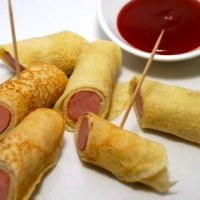

Cakedogs

Dish Description
I learned this recipe from the wonderful people of a Marshallese ward in Arkansas that I spent part of a 2-year LDS mission on. It was a wonderful treat after being out all day, consisting of a delightfully simple recipe. It's basically just a sweet, crepe-wrapped hotdog.
Ingredients
- flour
- sugar
- water
- hot dogs
Steps
- Mix the flour, sugar, and water 1:1:2, adding more water or flour as needed for the desired consistency. Your aiming for a more dribbly liquid than a thick batter.
- Fill the bottom of a frying pan with your preferred oil and bring to heat.
- Pour in the batter so that the diamater is roughly equal to the length of your hot dogs and fry the batter. Flip as needed.
- Prepare your hot dogs, either microwaved or boiled for the best flavor.
- As you finish each 'cake,' wrap a hot dog in it from one end to the other. CAUTION: The cakes retain their oil, so they will remain HOT.
- Let cool, then enjoy! 2 to 3 is enough to fill an average adult (: